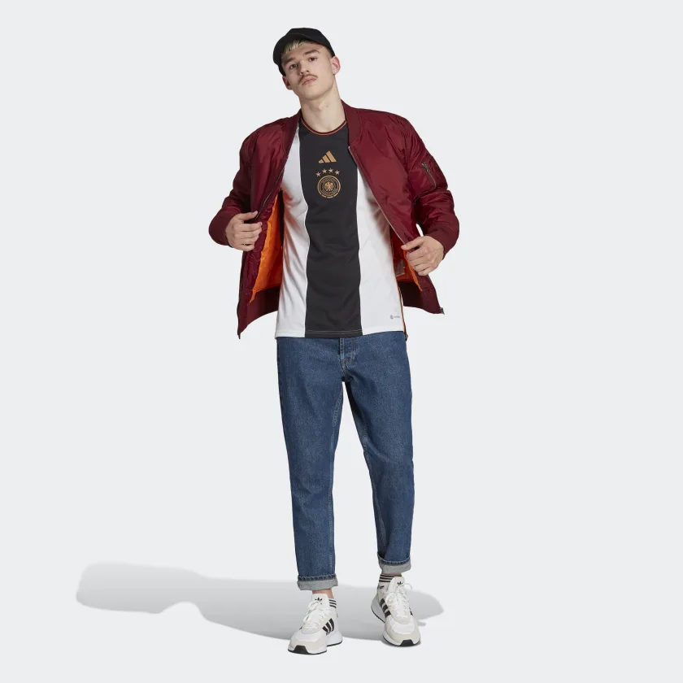
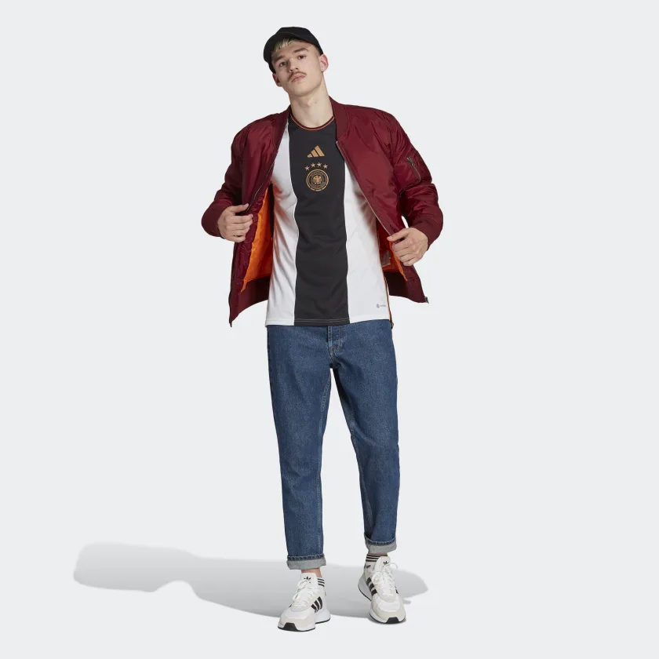

Camisas da seleção, copa QATAR
 

FEITA COM MATERIAIS RECICLADOS PARA OS FÃS DA SELEÇÃO ALEMÃ Para entrar no clima da Copa. Ganhando destaque no peito com detalhes dourados, o escudo costurado da seleção é a estrela desta camisa de futebol adidas da Alemanha. Uma mudança na direção das camisas oficiais modernas, a listra vertical ousada é preenchida com o DNA da seleção. Criada para manter os torcedores confortáveis, ela possui painéis em mesh